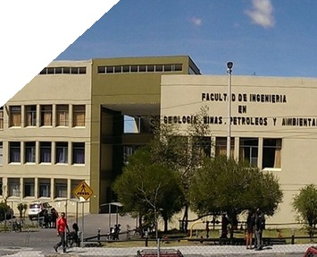

Estadística Descriptiva
Métricas de control de agua.
ACCEDEREstadística Inferencial
Pruebas de hipótesis.
ACCEDERModelos de Regresión
Predicción de contaminantes.
ACCEDERMachine Learning
Minería y modelado en RStudio.
ACCEDERModelado analítico y análisis de datos hidroquímicos para la gestión ambiental
Este portal web y los modelos analíticos integrados corresponden a un proyecto de investigación estrictamente institucional. Las simulaciones estadístico-ambientales, los conjuntos de datos hidroquímicos recopilados y las predicciones algorítmicas expuestas se presentan con fines educativos y de validación metodológica para la academia.
Métricas de control de agua.
ACCEDERPruebas de hipótesis.
ACCEDERPredicción de contaminantes.
ACCEDERMinería y modelado en RStudio.
ACCEDER
Este proyecto nace del interés por aplicar la estadística a problemas ambientales reales, usando datos abiertos de Brasil para practicar el análisis, la inferencia y el modelado.